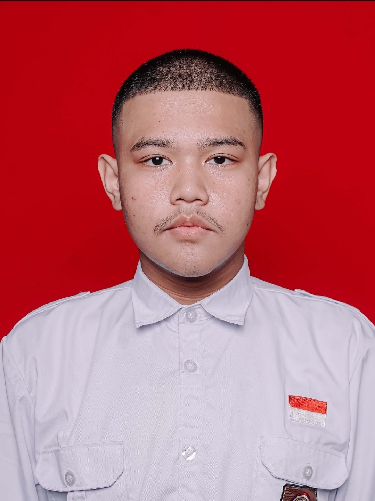

LKS ITSSB · KABUPATEN
2nd Place
Technical competition achievement representing practical IT skills.
PROFILE / ABOUT
I'm Christian Yusuf Alfred, a final-year vocational high school student majoring in Computer and Telecommunication Network Engineering (TJKT).

CYA / 2026ABOUT ME
My journey in technology started with networking and IT infrastructure. Through school projects, competitions, and independent practice, my interests gradually expanded into software development.
Today, I explore different parts of the software development process — from desktop applications and databases to backend systems, REST APIs, web technologies, and Android development.
I enjoy understanding how different layers of technology connect and turning what I learn into something practical.
02 / BACKGROUND
Building a foundation through computer networks, LAN installation, configuration, and troubleshooting.
Exploring Linux, virtual machines, servers, Nginx, and basic infrastructure operations.
Expanding into C#, JavaScript, PHP, Kotlin, databases, and application development.
Building applications and APIs while learning how frontend, backend, databases, and infrastructure work together.
03 / ACHIEVEMENTS
LKS ITSSB · KABUPATEN
Technical competition achievement representing practical IT skills.
OSN ECONOMICS · KABUPATEN
Achievement in the district-level Economics Olympiad.
ENGLISH SPEECH
Participating in an English speech competition as part of broader communication development.
04 / CURRENT CHAPTER
I'm currently in my final year of vocational high school, continuing to develop my technical foundation while preparing for the next stage of my education and career.
My goal is not to stop at one technology. I want to keep exploring how software, infrastructure, and systems can work together.